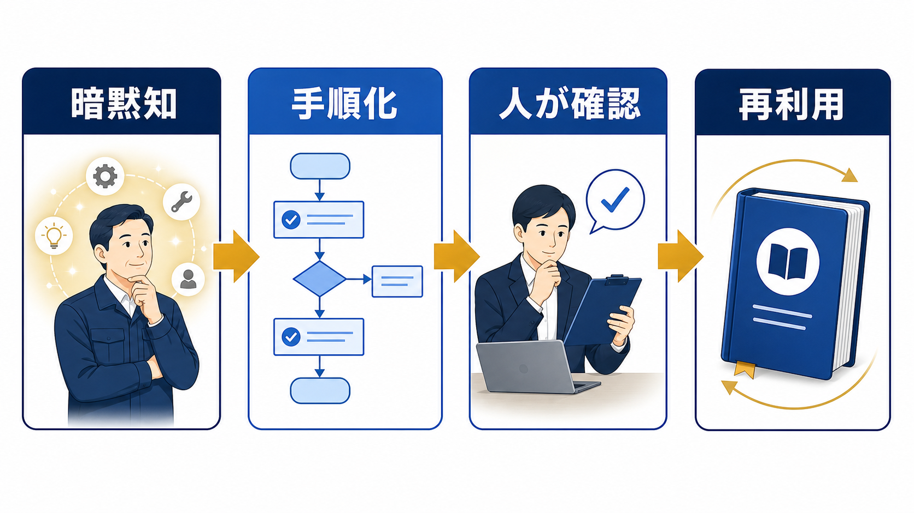

OPERATIONS / MANUAL DESIGN
業務マニュアルの作り方｜属人化を減らし、使われ続ける手順書にする
業務マニュアルは、文章を長く書けば使われるものではありません。対象業務を絞り、読む人の判断が分かる順番へ分解し、AIは下書きに、人は現場確認に使い分けます。

業務マニュアルは、止まると困る業務から作る
最初の対象は、担当者が不在だと止まる、同じ手順を繰り返す、ミスの確認方法が決まっている業務です。中小企業大学校も、属人化したノウハウの見える化と、作成後の管理・運用を重要な論点として扱っています。全社の手順を一度に書くより、使われる1本を完成させます。
| 候補業務 | 作成を優先する理由 | 最初に残すもの |
|---|---|---|
| 見積作成 | 条件確認と承認が複数人にまたがる | 入力項目・計算・承認者 |
| 問い合わせ対応 | 同じ質問への回答が属人化する | 分類・回答・エスカレーション |
| 月次報告 | 締切と確認項目が固定されている | データ取得・集計・提出 |
| 入社手続き | 漏れが後工程へ影響する | 期限・担当・完了条件 |
手順書は「作業」ではなく「判断」まで書く
初心者が迷うのは、クリック手順より「どの状態なら次へ進めるか」が書かれていないときです。各手順に、入力、操作、確認、次の分岐を添えます。画面が変わっても使えるよう、ボタン名だけでなく目的と完了条件を残します。
目的
誰のために、何を完了させるか。
手順
入力から処理、確認までの順番。
例外
迷った場合の相談先と戻し方。
AIは下書きに使い、正しさの確定は人が行う
既存のメモ、録音からの文字起こし、担当者へのヒアリングをAIに渡し、見出しや箇条書きへ整理する使い方は有効です。一方で、社内固有の判断、例外処理、権限、個人情報を含む原稿は、そのまま公開しません。入力データの分類は生成AIの社内利用ルールと照合します。
AIへの指示は「新人が読む」「前提を明記する」「判断が必要な箇所に確認マークを付ける」と具体化します。出力を完成品として扱わず、現場担当者が実際の案件で手順を再現してから公開版にします。
後任者が一人で再現できるか確認する
作成者が読んで分かるだけでは、マニュアルとして不十分です。担当外の人に手順を渡し、質問が出た場所、戻った場所、判断できなかった言葉を記録します。確認者は誤字だけでなく、前提条件、例外、完了条件を見ます。
- 説明なしで実行する：作成者は口頭で補足せず、読者の動きを観察する。
- 迷いを記録する：質問、戻り、探した資料をそのまま残す。
- 修正後に再実行する：同じ人か別の人で、手順が再現できるか確認する。
- 公開範囲を決める：全員向けか、担当者限定か、権限を分ける。
業務変更と問い合わせを更新トリガーにする
業務マニュアルは公開日を付けて終わりではありません。料金、担当、システム、社内ルールが変わったときに更新し、問い合わせやミスが出た箇所も見直します。更新者、確認者、更新日、変更理由を1行で残すと、古い手順が混ざりにくくなります。
| 項目 | 記録する内容 | 更新のきっかけ |
|---|---|---|
| 版 | v1.0、v1.1など | 大きな変更・小さな修正 |
| 責任者 | 業務オーナーと確認者 | 担当変更・組織変更 |
| 変更理由 | 何が変わったか | 制度・ツール・顧客条件 |
| 次回確認 | 見直す日や条件 | 月次・四半期・事故後 |
公開前に確認するチェックリスト
マニュアルを公開する前に、作業の説明だけでなく、読者が判断できるかを確認します。次の項目が空欄なら、作成者の頭の中に手順が残っています。
- 対象者と前提知識が明記されているか
- 開始条件、入力、完了条件が分かるか
- 例外時の相談先と停止条件があるか
- 機密情報や個人情報の扱いが書かれているか
- 更新者、版、更新日が残っているか
- 中小企業大学校「業務マニュアルの作り方・活かし方」（2026-07-13確認）
- IPA「AIの利活用、AIによるDXの推進」（2026-07-13確認）
よくある質問
WordやExcelだけで作れますか？
作れます。重要なのは形式より、目的、手順、判断基準、例外、更新者が残っていることです。最初は使い慣れた形式で作り、検索性や権限が必要になったら保管場所を見直します。
動画マニュアルと文章はどちらがよいですか？
画面操作や身体の動きを伝えるなら動画、判断基準や更新履歴を残すなら文章が向きます。両方を使う場合も、文章側に目的と完了条件を置き、動画だけに重要情報を閉じ込めないようにします。
AIに業務の録音を入力してもよいですか？
録音に個人情報や機密情報が含まれる場合は、サービス条件と社内ルールを先に確認します。入力範囲を絞り、匿名化や人の確認を行い、AIの出力をそのまま公開しないことが基本です。